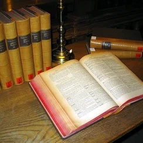

Главная
топ 10 русской классики
о книге

Один из видов печатной продукции: непериодическое издание, состоящее из сброшюрованных или отдельных бумажных листов или тетрадей, на которых нанесена типографским или рукописным способом текстовая и графическая информация, имеющее, как правило, твёрдый переплёт.